from pathlib import Path
import altair as alt
import geopandas as gpd
import numpy as np
import pandas as pd
import networkx as nx
from matplotlib import pyplot as plt
from IPython.display import display
lab_dir = Path.cwd()
if not (lab_dir / "data/sidewalk.zip").exists():
lab_dir = lab_dir / "labs/week-8-network-analysis"
if not lab_dir.exists():
raise FileNotFoundError("Open this notebook from the lab folder or the course public folder.")Week 8A: Geospatial Data — Street Networks
Week 8A: Geospatial Data — Street Networks
Learning goals: retrieve OSM boundaries and features; compare network types; calculate shortest routes; map walking access to amenities with Pandana.
This notebook retains the step-by-step demonstrations. Work through the cells in order; pause at the questions to predict or interpret the results. The main lesson has two parts: OSMnx and Pandana.
Lecture guide: OpenStreetMap fundamentals → Boundaries and features → Street networks → Routing → Walking access with Pandana.
# Keep table previews readable. Do not suppress numerical warnings globally.
pd.options.display.max_columns = 12
pd.options.display.max_colwidth = 60
plt.rcParams.update({"figure.figsize": (9, 6), "font.size": 11})Today: Urban street networks and OpenStreetMap (OSM)
- Two tools that make working with OSM data very easy
- What kind of questions can we answer?
- Street orientations
- Mapping event points to streets: car crashes
- Mapping amenities
- Network-constrained distances: accessibility
OSM: what is it?
- Collaborative mapping
- A free editable map of the World
- Sort of like Wikipedia for maps
Great source of data: street networks and a wealth of amenity information
https://www.openstreetmap.org
Working with OSM data
OSM data contain many geometry and tag types. Two complementary tools help us work with them:
- OSMnx: retrieve geographic features and model street networks.
- Pandana: run network queries efficiently for amenity accessibility.
We also use GeoPandas for tables/maps and Folium for optional interactive maps. OSM is a collaboratively mapped inventory: missing features and uneven coverage affect results.
Part 1: OSMnx
OSMnx connects OpenStreetMap data with GeoPandas and NetworkX. We will use it to retrieve boundaries, download street networks, and analyze routes and street patterns.
Before class: select a kernel with OSMnx 2.x, GeoPandas, NetworkX, Pandana, Altair, NumPy, pandas, and Matplotlib. Optional interactive maps also need Folium and mapclassify. The existing cache/ folder contains historical OSM responses from October 2025; keep it with the notebook. Uncached queries require internet access and may take several minutes or return different data.
# If OSMnx is missing OR its version is older than 2, run this in a new cell:
# %pip install --upgrade "osmnx>=2,<3"
# Then restart the kernel and run the notebook from the top.
# %pip targets the active notebook kernel; restarting reloads the upgraded package.
# For other missing dependencies:
# %pip install geopandas networkx pandana altair matplotlib folium mapclassifyimport osmnx as ox
if int(ox.__version__.split(".")[0]) < 2:
raise ImportError(
f"Found OSMnx {ox.__version__}; this notebook requires OSMnx 2.x. "
'Run %pip install --upgrade "osmnx>=2,<3" in a new notebook cell, '
"then restart the kernel and run all cells from the top."
)
ox.settings.use_cache = True
ox.settings.cache_folder = lab_dir / "cache"
ox.settings.log_console = False
print("OSMnx version:", ox.__version__)OSMnx version: 2.0.61.1 Getting boundaries from OSM
Key function: geocode_to_gdf() (docs)
We can get the boundary for anything identified as a “place” by OSM.
Important: Be careful to pass the right place name that OSM needs
philly = ox.geocode_to_gdf("Philadelphia, PA")
philly.head()| geometry | bbox_west | bbox_south | bbox_east | bbox_north | place_id | ... | type | place_rank | importance | addresstype | name | display_name | |
|---|---|---|---|---|---|---|---|---|---|---|---|---|---|
| 0 | POLYGON ((-75.28027 39.97496, -75.28023 39.97489, -75.28... | -75.280266 | 39.867005 | -74.955831 | 40.137959 | 331386626 | ... | administrative | 16 | 0.766493 | city | Philadelphia | Philadelphia, Philadelphia County, Pennsylvania, United ... |
1 rows × 17 columns
philly.crs<Geographic 2D CRS: EPSG:4326>
Name: WGS 84
Axis Info [ellipsoidal]:
- Lat[north]: Geodetic latitude (degree)
- Lon[east]: Geodetic longitude (degree)
Area of Use:
- name: World.
- bounds: (-180.0, -90.0, 180.0, 90.0)
Datum: World Geodetic System 1984 ensemble
- Ellipsoid: WGS 84
- Prime Meridian: GreenwichWe can plot it just like any other GeoDataFrame
# Web Mercator is useful for web display, but not local distance measurement.
ax = philly.to_crs(epsg=3857).plot(facecolor="none", edgecolor="black")
ax.set_title("Philadelphia — Web Mercator display")
ax.set_axis_off()
plt.show()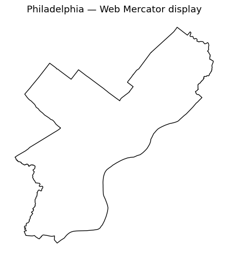
1.2 Projecting with OSMnx and GeoPandas
For a local study area, ox.projection.project_gdf() or gdf.to_crs(gdf.estimate_utm_crs()) selects a suitable UTM projection. UTM coordinates use meters. A single UTM zone is not appropriate for measurements over a large state or country.
Compare: how does the Philadelphia map change from Web Mercator to UTM?
philly_proj = philly.to_crs(philly.estimate_utm_crs())
ax = philly_proj.plot(facecolor="lightblue", edgecolor="gray")
ax.set_title(f"Philadelphia — {philly_proj.crs}")
ax.set_axis_off()
plt.show()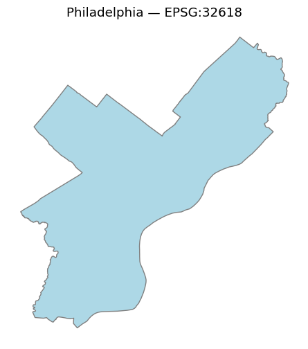
Some more examples:
# Some examples
place1 = ox.geocode_to_gdf("Manhattan, New York City, New York, USA")
place2 = ox.geocode_to_gdf("Miami-Dade County, Florida")
place3 = ox.geocode_to_gdf("Florida, USA")
place4 = ox.geocode_to_gdf("Spain")place1_reproj = place1.to_crs(place1.estimate_utm_crs())
ax = place1_reproj.plot(facecolor="lightblue", edgecolor="gray")
ax.set_title("Manhattan — local UTM")
ax.set_axis_off()
plt.show()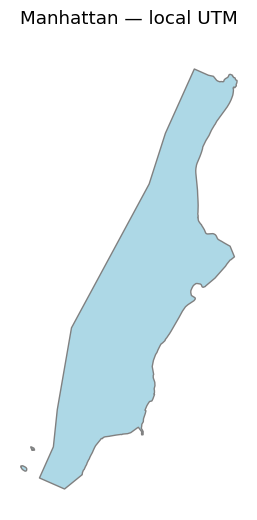
place2_reproj = place2.to_crs(place2.estimate_utm_crs())
ax = place2_reproj.plot(facecolor="lightblue", edgecolor="gray")
ax.set_title("Miami-Dade County — local UTM")
ax.set_axis_off()
plt.show()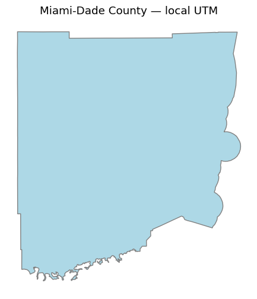
# A regional equal-area CRS is more appropriate for this statewide overview.
place3_reproj = place3.to_crs(epsg=5070)
ax = place3_reproj.plot(facecolor="lightblue", edgecolor="gray")
ax.set_title("Florida — regional equal-area projection")
ax.set_axis_off()
plt.show()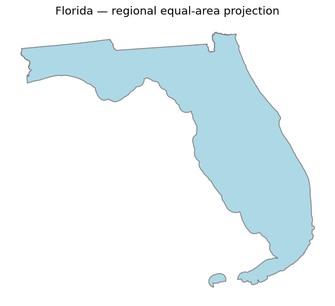
# Use a European equal-area projection for this country-scale overview.
place4_reproj = place4.to_crs(epsg=3035)
ax = place4_reproj.plot(facecolor="lightblue", edgecolor="gray")
ax.set_title("Spain — European equal-area projection")
ax.set_axis_off()
plt.show()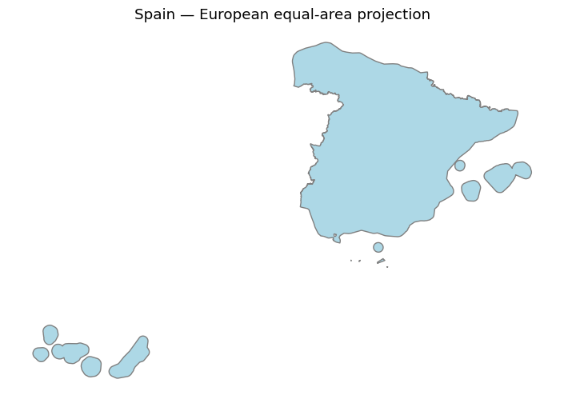
1.3 Downloading OSM features
Choose a query method that matches your study area:
| Function | Area supplied |
|---|---|
ox.features_from_place() |
Named place boundary |
ox.features_from_address() |
Distance around a geocoded address |
ox.features_from_bbox() |
(left, bottom, right, top) in longitude/latitude for OSMnx 2.x |
ox.features_from_point() |
Distance around (latitude, longitude) |
ox.features_from_polygon() |
Polygon in EPSG:4326 |
The following examples retain several tag queries so you can compare the results. OSMnx reference
About OSM features
Important reference: https://wiki.openstreetmap.org/wiki/Map_Features
- OSM uses a tagging system to categorize different map features
- The main feature categories are available on the OSM Wikipedia
- Examples: ‘amenity’, ‘building’, ‘landuse’, ‘highway’
- There are specific sub-categories for each feature type too:
- Amenity examples: ‘bar’, ‘college’, ‘library’
In the language of OSM, the “key” is the main feature category (e.g., amenity) and the “value” is the sub-category type (e.g., “bar”)
OSMnx uses a dictionary of tag keys and values. True matches any value for that key; a list matches any listed value. Multiple tags are combined as a union, not an intersection. The examples below illustrate progressively narrower queries.
# Get all amenities in Philadelphia
amenities = ox.features_from_place("Philadelphia, PA", tags={"amenity": True})len(amenities)15759amenities.head()| geometry | amenity | brand | brand:wikidata | name | operator | ... | name:vi | isced:level | pedagogy | school:gender | statue | crossing:markings | ||
|---|---|---|---|---|---|---|---|---|---|---|---|---|---|---|
| element | id | |||||||||||||
| node | 109811385 | POINT (-75.19487 40.05846) | bench | NaN | NaN | NaN | NaN | ... | NaN | NaN | NaN | NaN | NaN | NaN |
| 110237774 | POINT (-75.15662 39.9504) | parking_entrance | NaN | NaN | NaN | NaN | ... | NaN | NaN | NaN | NaN | NaN | NaN | |
| 274216093 | POINT (-75.19125 39.95764) | atm | Citibank | Q857063 | Citibank | Citibank | ... | NaN | NaN | NaN | NaN | NaN | NaN | |
| 274217596 | POINT (-75.19229 39.95301) | cafe | Starbucks | Q37158 | Starbucks | NaN | ... | NaN | NaN | NaN | NaN | NaN | NaN | |
| 313440966 | POINT (-75.16694 39.96394) | car_sharing | NaN | NaN | NaN | NaN | ... | NaN | NaN | NaN | NaN | NaN | NaN |
5 rows × 474 columns
# Get all bars in philadelphia
bars = ox.features_from_place("Philadelphia, PA", tags={"amenity": "bar"})len(bars)165bars.head()| geometry | addr:housenumber | addr:street | amenity | contact:phone | contact:website | ... | nonsquare | shop | contact:tiktok | contact:twitter | level | designation | ||
|---|---|---|---|---|---|---|---|---|---|---|---|---|---|---|
| element | id | |||||||||||||
| node | 1033935437 | POINT (-75.17552 39.95242) | 2101 | Chestnut Street | bar | +1 215-568-3355 | https://mixbarandgrillphilly.com/location/mix-bar-grill | ... | NaN | NaN | NaN | NaN | NaN | NaN |
| 1167079387 | POINT (-75.14925 39.9417) | 401 | South Street | bar | +1 215-925-6455 | https://www.milkboy.tv/southstreet | ... | NaN | NaN | NaN | NaN | NaN | NaN | |
| 1204761128 | POINT (-75.16363 39.92685) | NaN | NaN | bar | NaN | NaN | ... | NaN | NaN | NaN | NaN | NaN | NaN | |
| 1424271155 | POINT (-75.14909 39.94152) | 344 | South Street | bar | NaN | NaN | ... | NaN | NaN | NaN | NaN | NaN | NaN | |
| 1475230378 | POINT (-75.14002 39.96627) | 1001 | North 2nd Street | bar | NaN | NaN | ... | NaN | NaN | NaN | NaN | NaN | NaN |
5 rows × 66 columns
# Get bar, pub, and restaurant features in Philadelphia
food_and_drink = ox.features_from_place(
"Philadelphia, PA", tags={"amenity": ["pub", "bar", "restaurant"]}
)len(food_and_drink)1157food_and_drink.head()| geometry | addr:city | addr:housenumber | addr:postcode | addr:state | addr:street | ... | theme | building:colour | building:material | roof:shape | contact:tiktok | house | ||
|---|---|---|---|---|---|---|---|---|---|---|---|---|---|---|
| element | id | |||||||||||||
| node | 333786044 | POINT (-75.15893 39.94086) | Philadelphia | 735 | 19147 | PA | South 10th Street | ... | NaN | NaN | NaN | NaN | NaN | NaN |
| 343293806 | POINT (-75.15946 39.96073) | Philadelphia | 501 | 19123 | PA | North 13th Street | ... | NaN | NaN | NaN | NaN | NaN | NaN | |
| 566683522 | POINT (-75.15755 39.96205) | Philadelphia | 1139 | 19123 | NaN | Spring Garden Street | ... | NaN | NaN | NaN | NaN | NaN | NaN | |
| 596230881 | POINT (-75.18682 40.05492) | NaN | NaN | NaN | NaN | NaN | ... | NaN | NaN | NaN | NaN | NaN | NaN | |
| 596245658 | POINT (-75.19035 40.0592) | Philadelphia | 7136 | 19119 | PA | Germantown Avenue | ... | NaN | NaN | NaN | NaN | NaN | NaN |
5 rows × 155 columns
# Get bus stop features
bus_stops = ox.features_from_place("Philadelphia, PA", tags={"highway": "bus_stop"})len(bus_stops)334bus_stops.head()| geometry | bench | bus | covered | highway | name | ... | addr:postcode | addr:state | ref:signed | fixme | sign | panoramax | ||
|---|---|---|---|---|---|---|---|---|---|---|---|---|---|---|
| element | id | |||||||||||||
| node | 361011456 | POINT (-75.16166 39.95223) | yes | yes | yes | bus_stop | 13th St & Market St | ... | NaN | NaN | NaN | NaN | NaN | NaN |
| 750281693 | POINT (-75.07732 40.01797) | NaN | yes | NaN | bus_stop | NaN | ... | NaN | NaN | NaN | NaN | NaN | NaN | |
| 768271130 | POINT (-75.20726 40.01487) | NaN | yes | NaN | bus_stop | Wissahickon Transportation Center | ... | NaN | NaN | NaN | NaN | NaN | NaN | |
| 1015342921 | POINT (-75.18187 39.9664) | NaN | yes | NaN | bus_stop | NaN | ... | NaN | NaN | NaN | NaN | NaN | NaN | |
| 1015342926 | POINT (-75.18024 39.9667) | NaN | yes | NaN | bus_stop | NaN | ... | NaN | NaN | NaN | NaN | NaN | NaN |
5 rows × 45 columns
# Get commercial and retail landuse features
landuse = ox.features_from_place(
"Philadelphia, PA", tags={"landuse": ["commercial", "retail"]}
)len(landuse)349Let’s plot the land use features:
fig, ax = plt.subplots(figsize=(10, 6))
landuse.to_crs(philly_proj.crs).plot(ax=ax, color="steelblue")
ax.set_title("Commercial and retail land use mapped in OSM")
ax.set_axis_off()
plt.show()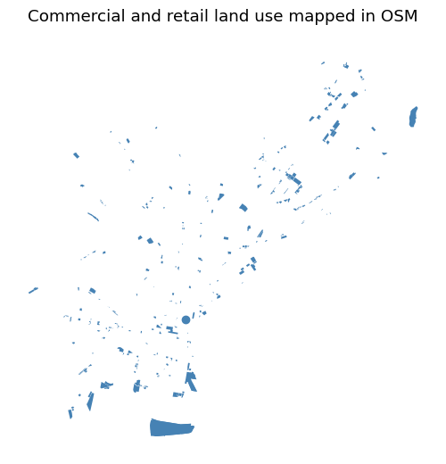
1.4 Downloading street networks
The corresponding graph_from_place, graph_from_address, graph_from_bbox, graph_from_point, and graph_from_polygon functions return NetworkX graphs.
Specify the travel mode with network_type. A distance-based download defines a study extent; it is not a network-distance service area. Larger areas need more download time and memory.
Street network around an address
Get streets within 500 meters of the center of Center City
G = ox.graph_from_address("Center City, Philadelphia, PA", dist=500, network_type="all")Project and plot it:
G_projected = ox.projection.project_graph(G)
fig, ax = ox.plot_graph(G_projected, show=False, close=False)
ax.set_title("Center City network — 500-meter download extent")
plt.show()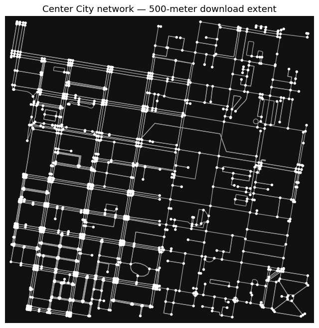
Remove the nodes:
fig, ax = ox.plot_graph(G_projected, node_size=0, show=False, close=False)
ax.set_title("The same network with node markers hidden")
plt.show()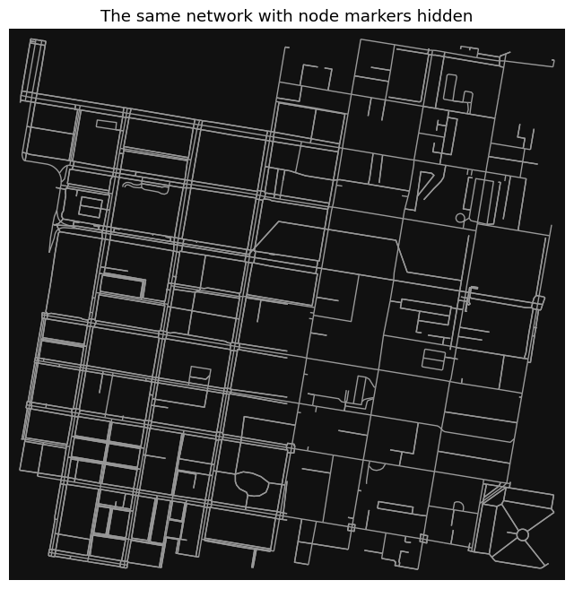
Let’s zoom out to 2,000 meters. This will take a little longer.
G = ox.graph_from_address("Center City, Philadelphia, PA", dist=2000, network_type="all")
G_projected = ox.projection.project_graph(G)fig, ax = ox.plot_graph(G_projected, node_size=0, show=False, close=False)
ax.set_title("Center City network — 2,000-meter download extent")
plt.show()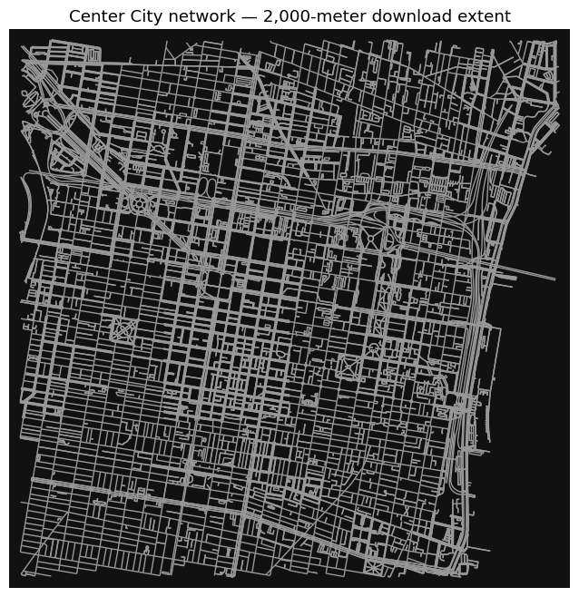
Getting different network types
drive: streets for driving, respecting one-way direction.drive_service: driving streets including service roads.walk: pedestrian streets and paths, modeled as bidirectional.bike: streets and paths available to bicycles.all: public and private-access streets and paths currently in use.all_public: public-access streets and paths (OSMnx 2.x).
We explicitly select drive and walk below. Predict: which network will contain more connections?
G_drive = ox.graph_from_address("Center City, Philadelphia, PA", network_type="drive", dist=2000)
fig, ax = ox.plot_graph(ox.projection.project_graph(G_drive), show=False, close=False)
ax.set_title("Driving network")
plt.show()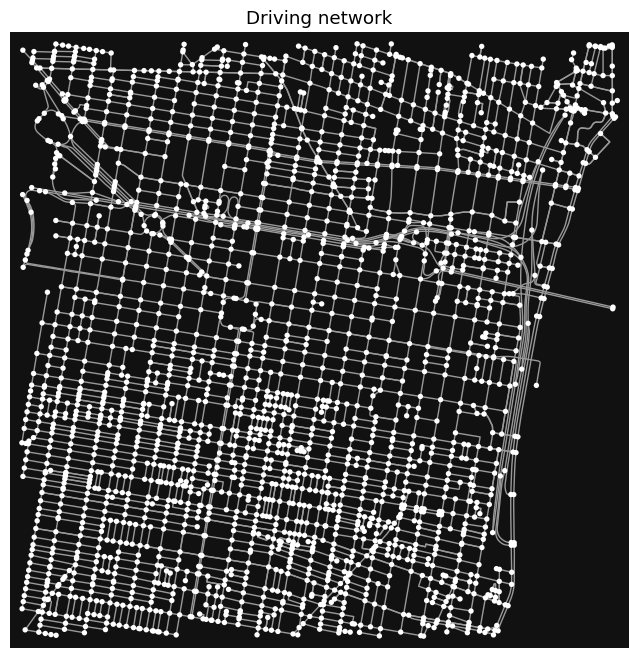
G_walk = ox.graph_from_address("Center City, Philadelphia, PA", network_type="walk", dist=2000)
fig, ax = ox.plot_graph(ox.projection.project_graph(G_walk), show=False, close=False)
ax.set_title("Walking network")
plt.show()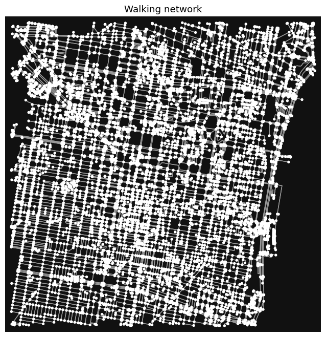
Street network within a place boundary
Use graph_from_place() to get the streets within a specific OSM place.
Caution
A couple of things to watch out for: 1. The place query has to be resolved by OSM. 2. If the place is a big city, you might be downloading a lot of data!
Let’s check out the street network for Berkeley, CA:
berkeley = ox.graph_from_place("Berkeley, California, USA", network_type="all")fig, ax = ox.plot_graph(ox.projection.project_graph(berkeley), node_size=0, show=False, close=False)
ax.set_title("Berkeley — streets within a named place")
plt.show()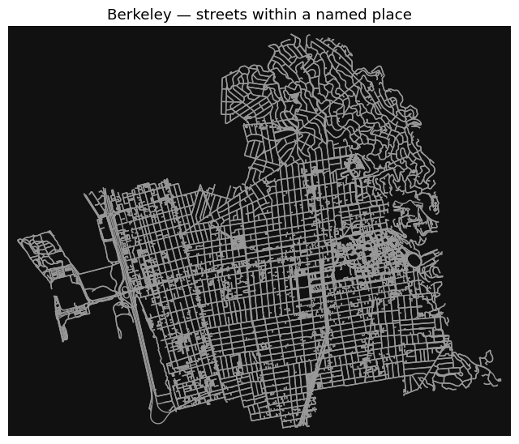
Streets within a specific polygon
Example: Let’s download all streets within Center City. We will use the “Central” planning district as a proxy for this area. The city’s planning districts are available on Open Data Philly.
# Prefer the local classroom copy; the source URL is retained for reference.
planning_path = lab_dir / "data/week8a/planning-districts.geojson"
planning_url = "https://opendata.arcgis.com/datasets/0960ea0f38f44146bb562f2b212075aa_0.geojson"
planning_districts = gpd.read_file(planning_path if planning_path.exists() else planning_url)
planning_districts = planning_districts.to_crs(4326)len(planning_districts)18planning_districts.head()| objectid | dist_name | abbrev | Shape__Area | Shape__Length | geometry | |
|---|---|---|---|---|---|---|
| 0 | 1 | River Wards | RW | 3.338947e+07 | 26635.524113 | POLYGON ((-75.09798 40.00496, -75.09687 40.00557, -75.09... |
| 1 | 2 | North Delaware | NDEL | 4.285306e+07 | 35525.335312 | POLYGON ((-74.98159 40.05363, -74.98139 40.0536, -74.981... |
| 2 | 3 | Lower Far Northeast | LFNE | 4.875252e+07 | 36958.071333 | POLYGON ((-74.96443 40.11728, -74.96434 40.11727, -74.96... |
| 3 | 4 | Central | CTR | 2.822133e+07 | 28401.823065 | POLYGON ((-75.14791 39.96733, -75.14715 39.96714, -75.14... |
| 4 | 5 | University Southwest | USW | 2.051763e+07 | 25957.938149 | POLYGON ((-75.18742 39.96338, -75.18644 39.96349, -75.18... |
Trim to the central district:
central_district = planning_districts.loc[planning_districts["dist_name"].eq("Central")].copy()
if len(central_district) != 1:
raise ValueError("Expected one Central planning district; inspect the source table.")And plot it:
central_district_reproj = central_district.to_crs(central_district.estimate_utm_crs())
ax = central_district_reproj.plot(facecolor="lightblue", edgecolor="gray")
ax.set_title("Central planning district")
ax.set_axis_off()
plt.show()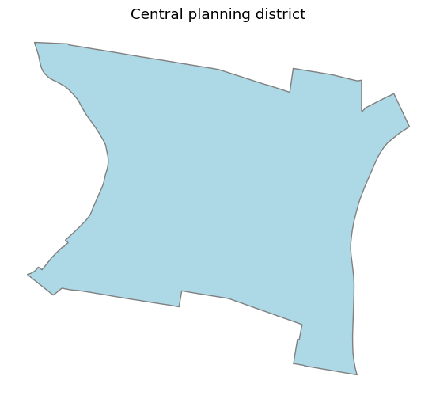
central_district[["dist_name", "geometry"]], central_district_reproj.crs( dist_name geometry
3 Central POLYGON ((-75.14791 39.96733, -75.14715 39.96714, -75.14...,
<Projected CRS: EPSG:32618>
Name: WGS 84 / UTM zone 18N
Axis Info [cartesian]:
- E[east]: Easting (metre)
- N[north]: Northing (metre)
Area of Use:
- name: Between 78°W and 72°W, northern hemisphere between equator and 84°N, onshore and offshore. Bahamas. Canada - Nunavut; Ontario; Quebec. Colombia. Cuba. Ecuador. Greenland. Haiti. Jamaica. Panama. Turks and Caicos Islands. United States (USA). Venezuela.
- bounds: (-78.0, 0.0, -72.0, 84.0)
Coordinate Operation:
- name: UTM zone 18N
- method: Transverse Mercator
Datum: World Geodetic System 1984 ensemble
- Ellipsoid: WGS 84
- Prime Meridian: Greenwich)Extract the one polygon with .iloc[0]. Its CRS must be EPSG:4326 for the OSMnx polygon query; keep the projected copy for measurements and plotting.
center_city_outline = central_district.geometry.iloc[0]
center_city_outline, type(center_city_outline)(<POLYGON ((-75.148 39.967, -75.147 39.967, -75.147 39.969, -75.147 39.97, -7...>,
shapely.geometry.polygon.Polygon)Now, let’s use ox.graph_from_polygon() to extract streets within this polygon.
# Get the graph
G_cc = ox.graph_from_polygon(center_city_outline, network_type="drive")fig, ax = ox.plot_graph(ox.projection.project_graph(G_cc), node_size=0, show=False, close=False)
ax.set_title("Driving network in the Central planning district")
plt.show()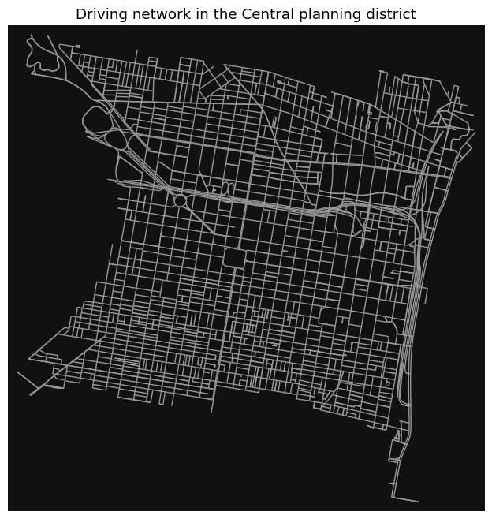
1.5 Converting from a graph to a GeoDataFrame
ox.convert.graph_to_gdfs() returns node (point) and edge (line) GeoDataFrames. OSMnx uses a MultiDiGraph: directed edges can have parallel alternatives. Edge rows are indexed by (u, v, key) so those alternatives stay distinct.
type(G_cc)networkx.classes.multidigraph.MultiDiGraphcc_edges = ox.convert.graph_to_gdfs(G_cc, edges=True, nodes=False)# we have lots of data associated with each edge!
cc_edges.head()| osmid | highway | lanes | name | oneway | reversed | ... | bridge | tunnel | width | service | access | junction | |||
|---|---|---|---|---|---|---|---|---|---|---|---|---|---|---|---|
| u | v | key | |||||||||||||
| 109727439 | 109911666 | 0 | 132508434 | residential | 1 | Bainbridge Street | True | False | ... | NaN | NaN | NaN | NaN | NaN | NaN |
| 109727448 | 109727439 | 0 | 12109011 | residential | NaN | South Colorado Street | True | False | ... | NaN | NaN | NaN | NaN | NaN | NaN |
| 110034229 | 0 | 12159387 | residential | NaN | Fitzwater Street | True | False | ... | NaN | NaN | NaN | NaN | NaN | NaN | |
| 109727507 | 110024052 | 0 | 193364514 | residential | NaN | Carpenter Street | True | False | ... | NaN | NaN | NaN | NaN | NaN | NaN |
| 109728761 | 110274344 | 0 | 672312336 | residential | NaN | Brown Street | True | False | ... | NaN | NaN | NaN | NaN | NaN | NaN |
5 rows × 16 columns
metric_crs = central_district_reproj.crs
ax = cc_edges.to_crs(metric_crs).plot(color="gray", linewidth=0.7)
boundary = gpd.GeoSeries([center_city_outline], crs="EPSG:4326")
boundary.to_crs(metric_crs).plot(ax=ax, facecolor="none", edgecolor="red", linewidth=2)
ax.set_title("Street edges and study boundary")
ax.set_axis_off()
plt.show()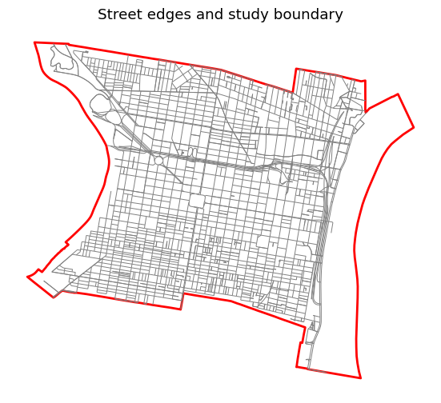
Interactive map demonstration: GeoPandas .explore() creates a Folium map. Enable the following switch to run the interactive examples. They need Folium, mapclassify, and internet access for web-map assets and tiles. Static maps remain available in the HTML when the switch is off.
SHOW_INTERACTIVE_MAPS = False
if SHOW_INTERACTIVE_MAPS:
display(cc_edges.explore(tiles="CartoDB positron"))
else:
print("Set SHOW_INTERACTIVE_MAPS = True to display the interactive street map.")Set SHOW_INTERACTIVE_MAPS = True to display the interactive street map.1.6 What can we do with the graph?
- Network-based statistics
- Routing
- Street orientations
- Visualizing crashes
And much more: see the OSMnx repository of Jupyter notebook examples
Street orientations
A great blog post on street orientations across different US and global cities.
One of my favorite examples of data viz, using matplotlib for radial histograms of street orientations…
G_bearings = ox.bearing.add_edge_bearings(G_cc)
G_undirected = ox.convert.to_undirected(G_bearings)
fig, ax = ox.plot.plot_orientation(G_undirected, figsize=(5, 5))
ax.set_title("Center City street orientations", pad=25)
plt.show()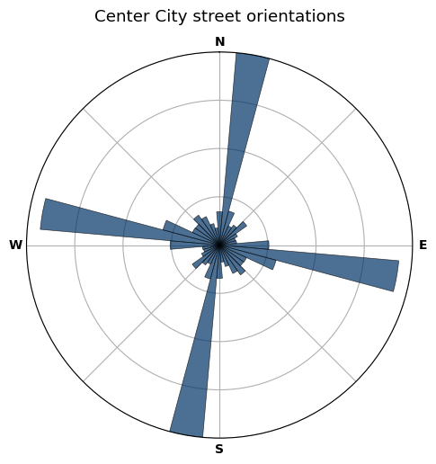
This histogram uses an unprojected, undirected graph so bearings describe physical streets without double-counting directed copies. Discuss: what do the peaks reveal about the street grid? See the OSMnx example notebooks for comparisons across cities.
Network statistics
ox.stats.basic_stats() reports node, edge, and physical-street measures. Directed edge counts are not the same as unique physical-street counts. Lengths supplied by OSMnx are in meters, even when graph coordinates are longitude/latitude.
network_stats = ox.stats.basic_stats(G_cc)
pd.Series(network_stats, name="value").to_frame()| value | |
|---|---|
| n | 2097 |
| m | 4027 |
| k_avg | 3.840725 |
| edge_length_total | 357852.730781 |
| edge_length_avg | 88.863355 |
| streets_per_node_avg | 3.407248 |
| streets_per_node_counts | {0: 0, 1: 61, 2: 12, 3: 1058, 4: 949, 5: 13, 6: 3, 7: 1} |
| streets_per_node_proportions | {0: 0.0, 1: 0.029089175011921792, 2: 0.00572246065808297... |
| intersection_count | 2036 |
| street_length_total | 311421.493192 |
| street_segment_count | 3484 |
| street_length_avg | 89.386192 |
| circuity_avg | 1.015986 |
| self_loop_proportion | 0.000574 |
Finding the shortest route
Let’s calculate the shortest route between the Art Museum and the Liberty Bell.
We’ll need to download all amenities in Philadelphia of type “tourism”.
- The
ox.features_from_place()can download OSM features with a specific tag - You can consult the OSM pages (the Art Museum and Liberty Bell) for each feature for additional info
- Both features are categorized as “tourism” in the OSM data — use the “tags” keyword to select this category
The supplied tourism.gpkg is a September 2026 classroom copy. It keeps this example reproducible; the live query remains in the following cell as a fallback.
# Use the classroom copy, or retain the original live OSM query if it is absent.
tourism_path = lab_dir / "data/week8a/tourism.gpkg"
if tourism_path.exists():
philly_tourism = gpd.read_file(tourism_path, layer="tourism").set_index(["element", "id"])
else:
philly_tourism = ox.features_from_place("Philadelphia, PA", tags={"tourism": True})len(philly_tourism)1052philly_tourism.head()| name | tourism | geometry | ||
|---|---|---|---|---|
| element | id | |||
| node | 357371322 | Bird Lake Picnic Area | picnic_site | POINT (-75.1958 39.9697) |
| 360500844 | Hilton Inn at Penn | hotel | POINT (-75.19582 39.95352) | |
| 360515304 | Robert Morris | artwork | POINT (-75.1486 39.94771) | |
| 360542779 | Mario the Magnificent | artwork | POINT (-75.18932 39.9554) | |
| 360777728 | Pennsylvania Historical Marker: ENIAC, first all purpose... | information | POINT (-75.19021 39.9523) |
philly_tourism.loc[philly_tourism["name"].str.contains("Art", case=False, na=False), ["name", "geometry"]]| name | geometry | ||
|---|---|---|---|
| element | id | ||
| node | 367974278 | La Salle University Art Museum | POINT (-75.1524 40.03748) |
| 3775151108 | Club Quarters Hotel Rittenhouse Square, Philadelphia | POINT (-75.16851 39.95134) | |
| 4064343335 | Soft Illusions Fine Art Gallery | POINT (-75.22113 40.02427) | |
| 5368454121 | Institute of Contemporary Art | POINT (-75.19477 39.95406) | |
| 5718906477 | Art Making Machine Studios | POINT (-75.13058 39.99573) | |
| 6639391809 | Philadelphia Museum of Jewish Art | POINT (-75.16088 39.96383) | |
| 6680708848 | Romanian Folk Art Museum | POINT (-75.16833 39.94733) | |
| 9904602517 | Winmont Apartments | POINT (-75.04059 40.07445) | |
| 12188327106 | Arch Enemy Arts | POINT (-75.14215 39.95191) | |
| 12193292355 | Twelve Gates Arts | POINT (-75.14336 39.9522) | |
| 12222614599 | Larry Becker Contemporary Art | POINT (-75.14334 39.95113) | |
| 12235452452 | Museum for Art in Wood | POINT (-75.14486 39.95339) | |
| 12288787985 | Art on the Ridge | POINT (-75.21664 40.03501) | |
| way | 28533972 | Philadelphia Museum of Art | POLYGON ((-75.18117 39.96468, -75.18141 39.96486, -75.18... |
| 89434182 | Commandant's Quarters | POLYGON ((-75.17721 39.89669, -75.17709 39.89667, -75.17... | |
| 333931830 | Pennsylvania Academy of the Fine Arts | POLYGON ((-75.1641 39.95543, -75.16416 39.95516, -75.163... | |
| 592399944 | Extended Stay America - Philadelphia - Airport - Bartram... | POLYGON ((-75.24837 39.88659, -75.24845 39.8865, -75.248... | |
| 988345364 | Woodmere Art Museum | POLYGON ((-75.21927 40.08319, -75.21932 40.08319, -75.21... |
museum_matches = philly_tourism.loc[
philly_tourism["name"].isin(["Philadelphia Art Museum", "Philadelphia Museum of Art"])
]
if len(museum_matches) != 1:
raise ValueError("Inspect museum_matches and select the intended OSM feature.")
art_museum = museum_matches.iloc[0]
art_museum.geometrybell_matches = philly_tourism.loc[philly_tourism["name"].eq("Liberty Bell")]
if len(bell_matches) != 1:
raise ValueError("Inspect bell_matches and select the intended OSM feature.")
liberty_bell = bell_matches.iloc[0]
liberty_bell.geometryExtract longitude and latitude for the two locations. For a building polygon, calculate an interior representative point in the projected CRS and transform it back to EPSG:4326. This avoids treating degrees as planar coordinates, but does not identify a verified entrance or curbside access point.
bell_point = bell_matches.to_crs(metric_crs).geometry.representative_point().to_crs(4326).iloc[0]
liberty_bell_x, liberty_bell_y = bell_point.x, bell_point.ymuseum_point = museum_matches.to_crs(metric_crs).geometry.representative_point().to_crs(4326).iloc[0]
art_museum_x, art_museum_y = museum_point.x, museum_point.yFind the nearest nodes on our OSMnx graph, using the ox.distance.nearest_nodes() function
# In Jupyter, ox.distance.nearest_nodes? opens the full help panel.
import inspect
print(inspect.signature(ox.distance.nearest_nodes))
print("X is longitude/easting; Y is latitude/northing. Match the graph CRS.")(G: 'nx.MultiDiGraph', X: 'float | Iterable[float]', Y: 'float | Iterable[float]', *, return_dist: 'bool' = False) -> 'int | npt.NDArray[np.int64] | tuple[int, float] | tuple[npt.NDArray[np.int64], npt.NDArray[np.float64]]'
X is longitude/easting; Y is latitude/northing. Match the graph CRS.art_museum_y39.965564759517356orig_node, origin_snap_m = ox.distance.nearest_nodes(
G_cc, X=liberty_bell_x, Y=liberty_bell_y, return_dist=True
)
dest_node, destination_snap_m = ox.distance.nearest_nodes(
G_cc, X=art_museum_x, Y=art_museum_y, return_dist=True
)
print(f"Snap distances: origin {origin_snap_m:.1f} m; destination {destination_snap_m:.1f} m")
if orig_node == dest_node or not nx.has_path(G_cc, orig_node, dest_node):
raise ValueError("Choose distinct locations connected by a directed route.")Snap distances: origin 40.9 m; destination 132.0 mUse ox.routing.shortest_path() to find a route between the snapped graph nodes. Pass weight="length" explicitly to minimize distance; this is also OSMnx’s default. In contrast, NetworkX’s unweighted shortest_path() minimizes edge count.
Snapping distances are not included in the route. A route can also be affected by the study boundary, which excludes connections outside the downloaded graph.
route1 = ox.routing.shortest_path(G_cc, orig_node, dest_node, weight="length")
if route1 is None:
raise ValueError("No directed route exists between the selected nodes.")
print(f"Route contains {len(route1)} nodes")
route1[:10] # Preview rather than printing every node.Route contains 37 nodes[3408446156,
110217312,
3425012161,
109814427,
5372039288,
109814445,
109814449,
5358069713,
5372059864,
2644235371]Use ox.plot_graph_route() to plot a graph and highlight a specific route
fig, ax = ox.plot_graph_route(G_cc, route1, node_size=0, show=False, close=False)
ax.set_title("Shortest-distance route: Liberty Bell to Art Museum")
plt.show()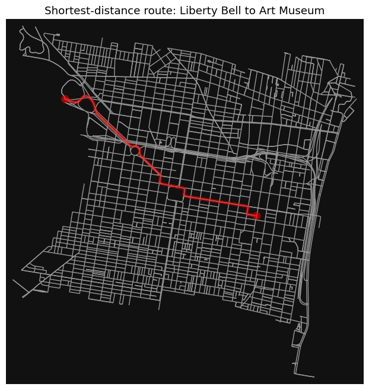
Keep the interactive route example using the OSMnx 2.x function ox.routing.route_to_gdf(). Its weight selects the appropriate edge when parallel alternatives connect the same pair of nodes.
gdf_route = ox.routing.route_to_gdf(G_cc, route1, weight="length")
if SHOW_INTERACTIVE_MAPS:
display(gdf_route.explore(tiles="CartoDB positron", color="red"))
else:
display(gdf_route[["length", "geometry"]].head())| length | geometry | |||
|---|---|---|---|---|
| u | v | key | ||
| 3408446156 | 110217312 | 0 | 141.034741 | LINESTRING (-75.15058 39.94975, -75.15072 39.94977, -75.... |
| 110217312 | 3425012161 | 0 | 5.819377 | LINESTRING (-75.15222 39.94996, -75.15221 39.95001) |
| 3425012161 | 109814427 | 0 | 105.409315 | LINESTRING (-75.15221 39.95001, -75.15212 39.9504, -75.1... |
| 109814427 | 5372039288 | 0 | 136.115485 | LINESTRING (-75.152 39.95094, -75.15211 39.95096, -75.15... |
| 5372039288 | 109814445 | 0 | 136.593417 | LINESTRING (-75.15357 39.95114, -75.15369 39.95115, -75.... |
Finding the shortest estimated travel time
add_edge_speeds() uses available maxspeed tags and imputes missing speeds by road type. add_edge_travel_times() converts length and speed to seconds. The 30 km/h fallback below is an explicit classroom assumption for unresolved speeds.
These are free-flow estimates, not measured trip times or live traffic. Congestion, signals, parking, and turn restrictions are not modeled. Predict: must the shortest-distance route also minimize estimated time?
G_cc = ox.routing.add_edge_speeds(G_cc, fallback=30)
G_cc = ox.routing.add_edge_travel_times(G_cc)edges = ox.convert.graph_to_gdfs(G_cc, nodes=False)edges.head()| osmid | highway | lanes | name | oneway | reversed | ... | bridge | tunnel | width | service | access | junction | |||
|---|---|---|---|---|---|---|---|---|---|---|---|---|---|---|---|
| u | v | key | |||||||||||||
| 109727439 | 109911666 | 0 | 132508434 | residential | 1 | Bainbridge Street | True | False | ... | NaN | NaN | NaN | NaN | NaN | NaN |
| 109727448 | 109727439 | 0 | 12109011 | residential | NaN | South Colorado Street | True | False | ... | NaN | NaN | NaN | NaN | NaN | NaN |
| 110034229 | 0 | 12159387 | residential | NaN | Fitzwater Street | True | False | ... | NaN | NaN | NaN | NaN | NaN | NaN | |
| 109727507 | 110024052 | 0 | 193364514 | residential | NaN | Carpenter Street | True | False | ... | NaN | NaN | NaN | NaN | NaN | NaN |
| 109728761 | 110274344 | 0 | 672312336 | residential | NaN | Brown Street | True | False | ... | NaN | NaN | NaN | NaN | NaN | NaN |
5 rows × 19 columns
# A simplified edge can contain several highway tags; convert only for grouping.
road_type_summary = edges.assign(road_type=edges["highway"].astype(str))
road_type_summary.groupby("road_type")[["length", "speed_kph", "travel_time"]].mean().round(2)| length | speed_kph | travel_time | |
|---|---|---|---|
| road_type | |||
| ['motorway_link', 'secondary_link'] | 224.67 | 40.23 | 20.10 |
| ['motorway_link', 'tertiary'] | 151.60 | 40.23 | 13.56 |
| ['residential', 'unclassified'] | 258.44 | 40.23 | 23.12 |
| living_street | 52.88 | 30.00 | 6.35 |
| motorway | 446.91 | 82.72 | 19.20 |
| motorway_link | 309.89 | 40.23 | 27.73 |
| primary | 102.96 | 44.39 | 8.38 |
| primary_link | 53.89 | 40.23 | 4.82 |
| residential | 80.96 | 38.47 | 7.60 |
| secondary | 95.55 | 42.30 | 8.27 |
| tertiary | 77.12 | 41.38 | 6.73 |
| tertiary_link | 39.97 | 40.23 | 3.58 |
| trunk | 54.15 | 50.96 | 3.93 |
| trunk_link | 179.57 | 30.00 | 21.55 |
| unclassified | 123.51 | 37.93 | 11.87 |
route2 = ox.routing.shortest_path(G_cc, orig_node, dest_node, weight="travel_time")
if route2 is None:
raise ValueError("No route exists for the travel-time query.")
# Select each route's actual edges using the cost that optimized that route.
gdf_route1 = ox.routing.route_to_gdf(G_cc, route1, weight="length")
gdf_route2 = ox.routing.route_to_gdf(G_cc, route2, weight="travel_time")# Plot the selected geometries so parallel edges match the comparison table.
fig, ax = plt.subplots(figsize=(10, 7))
edges.to_crs(metric_crs).plot(ax=ax, color="lightgray", linewidth=0.5)
gdf_route1.to_crs(metric_crs).plot(ax=ax, color="crimson", linewidth=5, label="Shortest distance")
gdf_route2.to_crs(metric_crs).plot(ax=ax, color="gold", linewidth=2, label="Minimum estimated time")
ax.legend()
ax.set_title("Compare route objectives")
ax.set_axis_off()
plt.show()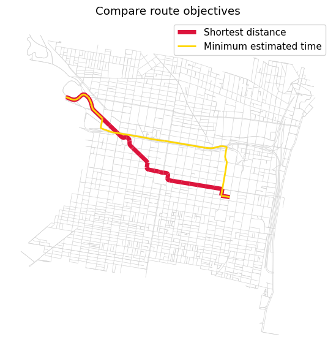
Let’s plot both in an interactive map:
if SHOW_INTERACTIVE_MAPS:
m = gdf_route1.explore(tiles="CartoDB dark_matter", color="red")
gdf_route2.explore(color="yellow", m=m)
display(m)
else:
print("Enable SHOW_INTERACTIVE_MAPS to compare both routes interactively.")Enable SHOW_INTERACTIVE_MAPS to compare both routes interactively.Compare the distance and estimated travel time of the two routes:
Distances:
meters_to_miles = 0.0006213712
route1_length = gdf_route1["length"].sum() * meters_to_miles
route2_length = gdf_route2["length"].sum() * meters_to_miles
print(f"Shortest-distance route: {route1_length:.2f} miles")
print(f"Minimum-time route: {route2_length:.2f} miles")Shortest-distance route: 2.26 miles
Minimum-time route: 2.53 milesTravel times:
# Measure BOTH costs on the same selected edges for each route.
seconds_to_mins = 1 / 60
route1_time = gdf_route1["travel_time"].sum() * seconds_to_mins
route2_time = gdf_route2["travel_time"].sum() * seconds_to_minsSummarize:
comparison = pd.DataFrame({
"Route": ["Shortest distance", "Minimum estimated time"],
"Distance (miles)": [route1_length, route2_length],
"Estimated time (minutes)": [route1_time, route2_time],
}).set_index("Route")
display(comparison.round(2))
assert route1_length <= route2_length + 1e-6
assert route2_time <= route1_time + 1e-6| Distance (miles) | Estimated time (minutes) | |
|---|---|---|
| Route | ||
| Shortest distance | 2.26 | 5.26 |
| Minimum estimated time | 2.53 | 4.76 |
Part 2: Pandana
“Pandas Network Analysis - dataframes of network queries, quickly”
Pandana complements OSMnx by efficiently querying network distances for many locations. We will reuse the OSM amenity data and walking graph already downloaded, then calculate the distance from each node to nearby amenities.
# If Pandana is missing, install it in the active environment and restart:
# %pip install pandanaimport pandana as pndaStep 1: Get amenity data
Reuse the amenities GeoDataFrame downloaded in Part 1 rather than querying the same features through a second OSM loader. We keep the bounding-box, table-inspection, and amenity-count steps so you can follow how the data become inputs to Pandana.
print("Amenity fields:", amenities.columns.tolist())
print("Original amenity CRS:", amenities.crs)Amenity fields: ['geometry', 'amenity', 'brand', 'brand:wikidata', 'name', 'operator', 'operator:wikidata', 'operator:wikipedia', 'short_name', 'addr:city', 'addr:housenumber', 'addr:postcode', 'addr:state', 'addr:street', 'air_conditioning', 'branch', 'cuisine', 'official_name', 'opening_hours', 'phone', 'ref', 'takeaway', 'website', 'created_by', 'source', 'alt_name', 'atm', 'contact:facebook', 'diet:vegetarian', 'payment:cash', 'payment:credit_cards', 'payment:debit_cards', 'wheelchair', 'brand:website', 'healthcare', 'internet_access', 'url', 'contact:phone', 'description', 'email', 'wikidata', 'brewery', 'contact:instagram', 'diet:vegan', 'education', 'ele', 'gnis:feature_id', 'religion', 'check_date', 'denomination', 'building', 'old_name', 'comment', 'operator:type', 'school', 'wikipedia', 'service_times', 'historic:amenity', 'name:en', 'social_facility', 'operator:short', 'operator:website', 'emergency', 'healthcare:speciality', 'bicycle_parking', 'capacity', 'covered', 'library', 'ref:isil', 'addr:country', 'callsign', 'studio', 'craft', 'microbrewery', 'outdoor_seating', 'drive_through', 'check_date:opening_hours', 'contact:website', 'reservation', 'website:menu', 'addr:unit', 'internet_access:fee', 'shop', 'training', 'toilets:wheelchair', 'contact:linkedin', 'contact:tiktok', 'contact:twitter', 'addr:housename', 'delivery', 'indoor_seating', 'bottle', 'fountain', 'collection_times', 'parking', 'self_service', 'dispensing', 'opening_hours:drive_through', 'opening_hours:signed', 'screen', 'payment:coins', 'smoking', 'architect', 'artist_name', 'wikimedia_commons', 'female', 'fee', 'check_date:opening_hours:drive_through', 'contact:myspace', 'fax', 'bar', 'designation', 'tourism', 'source:pkey', 'fixme', 'access', 'changing_table', 'toilets', 'name:zh', 'addr:full', 'mobile', 'charge', 'panoramax', 'fuel:biodiesel', 'fuel:biogas', 'fuel:cng', 'fuel:diesel', 'fuel:e10', 'fuel:e85', 'fuel:electricity', 'sport', 'collection_times:signed', 'ref:signed', 'drive_in', 'compressed_air', 'check_date:collection_times', 'food', 'cash_in', 'indoor', 'toilets:access', 'not:brand:wikidata', 'diet:halal', 'opening_hours:atm', 'payment:apple_pay', 'payment:contactless', 'toilets:handwashing', 'toilets:handwashing:soap', 'check_date:diet:vegan', 'diet:organic', 'diet:meat', 'image:menu', 'image:menu:0', 'image:menu:1', 'image:menu:2', 'panoramax:0', 'leisure', 'check_date:diet:vegetarian', 'drink:club-mate', 'car_wash', 'note', 'bicycle_rental', 'kiosk', 'min_age', 'network', 'network:wikidata', 'owner', 'owner:wikidata', 'ownership', 'payment:app', 'rental', 'sponsor', 'sponsor:wikidata', 'toilets:disposal', 'opening_hours:bar', 'opening_hours:kitchen', 'diet:pescetarian', 'lgbtq', 'park_ride', 'supervised', 'power_supply', 'addr:place', 'flickr', 'was:shop', 'contact:email', 'facebook', 'instagram', 'twitter', 'youtube', 'source:cuisine', 'disused:shop', 'toilets:position', 'male', 'maxheight', 'wheelchair:description', 'wheelchair:description:en', 'internet_access:ssid', 'layer', 'service:bicycle:chain_tool', 'service:bicycle:pump', 'currency:USD', 'drink:coca-cola', 'drink:coke', 'drink:cola', 'drink:cola_zero', 'drink:soda', 'drink:water', 'vending', 'network:wikipedia', 'amenity_1', 'recycling:computers', 'recycling:tv_monitor', 'recycling_type', 'ferry', 'public_transport', 'entrance', 'toilets:unisex', 'kitchen_hours', 'animal', 'fixme:atp', 'website:orders', 'website:reservation', 'check_date:wheelchair', 'backrest', 'street_vendor', 'service:bicycle:repair', 'payment:cards', 'name:es', 'diet:kosher', 'social_facility:for', 'theatre:genre', 'beds', 'level', 'payment:visa', 'was:name', 'happy_hours', 'opening_hours:brunch', 'opening_hours:dinner', 'opening_hours:lunch', 'direction', 'office', 'date', 'display', 'faces', 'armrest', 'seats', 'material', 'name:ca', 'addr:city:ar', 'name:ar', 'service:bicycle:tools', 'colour', 'brand:type', 'parcel_locker:type', 'parcel_mail_in', 'parcel_pickup', 'waste', 'historic', 'artwork_type', 'start_date', 'support', 'type', 'payment:american_express', 'payment:discover_card', 'payment:mastercard', 'dog', 'recycling:beverage_cartons', 'recycling:cans', 'recycling:glass_bottles', 'recycling:paper', 'recycling:plastic', 'recycling:plastic_bottles', 'recycling:plastic_packaging', 'contact:yelp', 'portable', 'seasonal', 'unisex', 'internet_access:description', 'man_made', 'particle_accelerator', 'substance', 'payment:cheque', 'heritage', 'clock', 'inscription', 'inscription:1', 'panoramax:1', 'bus', 'tram', 'opening_hours:bottle_shop', 'barrier', 'public_bookcase:type', 'check_date:capacity', 'payment:cash_app', 'payment:venmo', 'seating', 'currency:XBT', 'theatre:type', 'smoothness', 'surface', 'opening_hours:Condesa', 'opening_hours:El_Cafe', 'opening_hours:El_Techo', 'shelter_type', 'currency:BCH', 'manufacturer', 'payment:onchain', 'cash_out', 'brand:en', 'brand:zh', 'location', 'lit', 'drinking_water', 'height', 'fridge', 'opening_hours:covid19', 'diet:healthy', 'abandoned:amenity', 'artwork_subject', 'memorial', 'subject:wikidata', 'payment:lightning', 'payment:lightning_contactless', 'delivery:partner', 'internet_access:password', 'post_box:type', 'description:en', 'check_date:currency:XBT', 'check_date:smoking', 'phone:mnemonic', 'addr:door', 'was:amenity', 'urgent_care', 'community_centre:for', 'community_centre', 'animal_shelter', 'brand:short', 'disused:amenity', 'cash', 'name:etymology', 'name:etymology:wikidata', 'image', 'operator:short_name', 'automated', 'social_centre:for', 'cash_withdrawal', 'nobrand', 'recycling:clothes', 'animal_training', 'parking_space', 'bike_ride', 'bin', 'polling_station', 'shop:music:vinyl', 'books', 'manufacturer:wikidata', 'model', 'model:ref', 'addr:floor', 'diet', 'survey:date', 'former:shop', 'cafe', 'contact:bluesky', 'website:booking', 'fuel', 'nursery', 'preschool', 'diet:gluten_free', 'int_name', 'old_ref', 'mimics', 'fast_food', 'gender_segregated', 'heating', 'live_music', 'was:addr:housenumber', 'healthcare:for', 'tactile_paving', 'animal_boarding', 'recycling:waste', 'authentication:app', 'bicycle', 'frequency', 'hgv', 'maxstay', 'motorcar', 'network:website', 'payment:app:tesla', 'ref:supercharge_info', 'scooter', 'socket:nacs', 'socket:nacs:output', 'diet:mediterranean', 'landuse', 'restaurant', 'seeds', 'building:levels', 'capacity:disabled', 'building:floor', 'ref:nrhp', 'building:material', 'roof:levels', 'roof:shape', 'vehicle', 'natural', 'water', 'building:use', 'lanes', 'ship:type', 'wifi', 'orientation', 'name:he', 'source:name', 'basilica', 'diocese', 'website:en', 'roof:material', 'access:conditional', 'rite', 'heritage:operator', 'building:architecture', 'heritage:website', 'contact:mastodon', 'architect:wikidata', 'building:levels:underground', 'nrhp:criteria', 'nrhp:inscription_date', 'building:colour', 'ref:dove', 'check_date:compressed_air', 'nonsquare', 'name:ja', 'name:zn', 'roof:orientation', 'demolished:building', 'historic:name', 'grades', 'farm_boxes', 'disused:name', 'post_office', 'building:part', 'monastery:type', 'theme', 'bench', 'loc_name', 'drink', 'subdenomination', 'police', 'was:cuisine', 'was:delivery', 'was:drive_through', 'was:outdoor_seating', 'was:takeaway', 'school:type', 'old_name1', 'old_name2', 'elevation', 'fuel:octane_95', 'fuel:gasoline', 'fuel:octane_87', 'healthcare:counselling', 'parking:orientation', 'area', 'protection_title', 'source_ref', 'country', 'house', 'diet:lacto_vegetarian', 'name:vi', 'isced:level', 'pedagogy', 'school:gender', 'statue', 'crossing:markings']
Original amenity CRS: epsg:4326Get the bounding box:
# Use the walking network's extent so the POIs and network cover the same area.
walk_nodes_ll = ox.convert.graph_to_gdfs(G_walk, edges=False)
boundary = tuple(walk_nodes_ll.total_bounds)
boundary, type(boundary)((np.float64(-75.1809459),
np.float64(39.9329666),
np.float64(-75.1340392),
np.float64(39.9689338)),
tuple)lng_min, lat_min, lng_max, lat_max = boundary
print("Bounding box order: longitude min, latitude min, longitude max, latitude max")Bounding box order: longitude min, latitude min, longitude max, latitude maxpoi_features = amenities.to_crs(4326).cx[lng_min:lng_max, lat_min:lat_max].copy()
valid = poi_features.geometry.notna() & ~poi_features.geometry.is_empty & poi_features.geometry.is_valid
poi_features = poi_features.loc[valid & poi_features["amenity"].notna()].copy()
# Represent polygon amenities by interior points, not centroids in degrees.
poi_projected = poi_features.to_crs(metric_crs)
poi_projected.geometry = poi_projected.geometry.representative_point()
poi_df = poi_projected.to_crs(4326).reset_index()
poi_df["lon"] = poi_df.geometry.x
poi_df["lat"] = poi_df.geometry.ypoi_df.head()| element | id | geometry | amenity | brand | brand:wikidata | ... | pedagogy | school:gender | statue | crossing:markings | lon | lat | |
|---|---|---|---|---|---|---|---|---|---|---|---|---|---|
| 0 | node | 110237774 | POINT (-75.15662 39.9504) | parking_entrance | NaN | NaN | ... | NaN | NaN | NaN | NaN | -75.156620 | 39.950401 |
| 1 | node | 313440966 | POINT (-75.16694 39.96394) | car_sharing | NaN | NaN | ... | NaN | NaN | NaN | NaN | -75.166939 | 39.963935 |
| 2 | node | 313440968 | POINT (-75.17041 39.96398) | car_sharing | NaN | NaN | ... | NaN | NaN | NaN | NaN | -75.170407 | 39.963978 |
| 3 | node | 333786044 | POINT (-75.15893 39.94086) | restaurant | NaN | NaN | ... | NaN | NaN | NaN | NaN | -75.158928 | 39.940858 |
| 4 | node | 333786095 | POINT (-75.15736 39.94192) | cafe | NaN | NaN | ... | NaN | NaN | NaN | NaN | -75.157357 | 39.941924 |
5 rows × 478 columns
len(poi_df)3056poi_df[["lat", "lon", "amenity"]].head(10)| lat | lon | amenity | |
|---|---|---|---|
| 0 | 39.950401 | -75.156620 | parking_entrance |
| 1 | 39.963935 | -75.166939 | car_sharing |
| 2 | 39.963978 | -75.170407 | car_sharing |
| 3 | 39.940858 | -75.158928 | restaurant |
| 4 | 39.941924 | -75.157357 | cafe |
| 5 | 39.942642 | -75.157958 | bank |
| 6 | 39.943102 | -75.160030 | pharmacy |
| 7 | 39.960730 | -75.159457 | pub |
| 8 | 39.961567 | -75.170303 | car_sharing |
| 9 | 39.965132 | -75.156185 | school |
Explore the amenities in this region
For the full list of amenities, see the OSM Wikipedia
# Aggregate before charting to keep the output small and avoid Altair row limits.
counts = poi_df["amenity"].value_counts().rename_axis("amenity").reset_index(name="count")
chart = alt.Chart(counts).mark_bar().encode(
y=alt.Y("amenity:N", sort="-x", title="Amenity"),
x=alt.X("count:Q", title="Mapped OSM objects"),
tooltip=["amenity:N", "count:Q"],
).properties(title="Amenity types in the study area")
chartStep 2: Create a Pandana network
Convert the existing walking graph to tables. Edge costs are OSMnx lengths in meters. The graph already has both travel directions, so twoway=False preserves these records without adding duplicates.
Parallel edges with the same endpoints are reduced to the shortest for distance-only analysis. This keeps the lesson focused on Pandana rather than a second download API.
# No osmnet download is needed: inspect the walking graph we already have.
print(f"Walking graph: {len(G_walk):,} nodes and {G_walk.number_of_edges():,} directed edges")Walking graph: 10,655 nodes and 31,854 directed edgesG_walk_projected = ox.projection.project_graph(G_walk, to_crs=metric_crs)
walk_nodes, walk_edges = ox.convert.graph_to_gdfs(G_walk_projected)
links = walk_edges.reset_index()[["u", "v", "length"]]
links = links.sort_values("length").drop_duplicates(["u", "v"])
links = links.loc[links.u != links.v].reset_index(drop=True)
net = pnda.Network(
walk_nodes.geometry.x, walk_nodes.geometry.y,
links["u"], links["v"], links[["length"]], twoway=False,
)Generating contraction hierarchies with 1 threads.
Setting CH node vector of size 10655
Setting CH edge vector of size 31500
Range graph removed 31500 edges of 63000
. 10% . 20% . 30% . 40% . 50% . 60% . 70% . 80% . 90% . 100%Step 3: Tell the network the location of amenities
net.set_pois() registers each amenity category for subsequent queries. We retain the four examples: restaurant, bar, school, and car sharing.
Use projected point coordinates matching the network. POIs are snapped to nodes; the off-network connection is not part of Pandana’s distance. The 100-meter snapping cutoff below is a classroom assumption. Inspect the exclusions before using results for a real study.
max_distance = 2000 # Network search distance, in meters.
num_pois = 10
AMENITIES = ["restaurant", "bar", "school", "car_sharing"]
net.precompute(max_distance)
poi_metric = poi_df.to_crs(metric_crs)
_, snap_m = ox.distance.nearest_nodes(
G_walk_projected, X=poi_metric.geometry.x, Y=poi_metric.geometry.y, return_dist=True
)
poi_metric["snap_m"] = snap_m
print(f"POIs excluded beyond 100 m from a node: {(poi_metric.snap_m > 100).sum():,}")
poi_metric = poi_metric.loc[poi_metric.snap_m <= 100].copy()
registered_amenities = []
for amenity in AMENITIES:
subset = poi_metric.loc[poi_metric["amenity"].eq(amenity)]
print(f"{amenity}: {len(subset):,} mapped objects")
if subset.empty:
continue
net.set_pois(amenity, max_distance, num_pois, subset.geometry.x, subset.geometry.y)
registered_amenities.append(amenity)POIs excluded beyond 100 m from a node: 11
restaurant: 387 mapped objects
bar: 70 mapped objects
school: 50 mapped objects
car_sharing: 80 mapped objectsfig_kwargs = {"facecolor": "white", "figsize": (8, 7)}
plot_kwargs = {"markersize": 5, "alpha": 0.9, "cmap": "viridis_r"}Step 4: Plot the walking distance to the nearest POI
For each network node, query the distance to the nth nearest mapped amenity, join the distance to node coordinates, and map it.
Use max_distance=np.nan in the query to distinguish not found within the cutoff from a measured distance exactly equal to the cutoff. Missing results can reflect too few mapped objects, disconnected paths, or the study boundary—not necessarily no real-world amenity.
4.1 Query distances with net.nearest_pois()
amenity = "bar"
if amenity not in registered_amenities:
raise ValueError("No bars were found; select a registered amenity category.")
access = net.nearest_pois(
distance=max_distance, category=amenity, num_pois=num_pois, max_distance=np.nan
)access.tail(10) # Columns 1–10 correspond to the nearest through tenth-nearest POI.| 1 | 2 | 3 | 4 | 5 | 6 | 7 | 8 | 9 | 10 | |
|---|---|---|---|---|---|---|---|---|---|---|
| osmid | ||||||||||
| 13119729382 | 343.708008 | 502.050995 | 505.541992 | 607.348999 | 621.700989 | 788.398010 | 824.708008 | 892.562988 | 917.619019 | 1015.017029 |
| 13152105637 | 469.886993 | 480.798004 | 616.315002 | 726.325012 | 809.336975 | 974.054993 | 1272.135986 | 1274.853027 | 1275.818970 | 1286.416016 |
| 13152105636 | 463.376007 | 474.286987 | 609.804016 | 719.814026 | 802.825989 | 967.544006 | 1265.625000 | 1268.342041 | 1269.307983 | 1279.905029 |
| 13152105632 | 465.343994 | 476.255005 | 611.771973 | 721.781982 | 804.794006 | 969.512024 | 1267.593018 | 1270.310059 | 1271.276001 | 1281.873047 |
| 13152105635 | 465.251007 | 476.161987 | 611.679016 | 721.689026 | 804.700989 | 969.419006 | 1267.500000 | 1270.217041 | 1271.182983 | 1281.780029 |
| 13152542790 | 147.013000 | 218.817993 | 229.367004 | 243.223007 | 390.628998 | 546.742004 | 1033.467041 | 1081.383057 | 1081.383057 | 1495.083008 |
| 13152610920 | 568.301025 | 905.833984 | 930.239014 | 940.978027 | 967.780029 | 1022.705017 | 1046.093018 | 1092.702026 | 1134.990967 | 1242.312988 |
| 13152610923 | 549.263000 | 886.796021 | 911.200989 | 922.372009 | 948.742004 | 1021.380005 | 1027.055054 | 1091.376953 | 1148.942017 | 1256.264038 |
| 13152684131 | 607.216980 | 741.578003 | 825.379028 | 840.226990 | 1087.027954 | 1156.817017 | 1164.547974 | 1404.442017 | 1458.333008 | 1469.422974 |
| 13205547937 | 993.697021 | 1416.199951 | 1650.828979 | 1824.678955 | 1869.854980 | 1881.806030 | NaN | NaN | NaN | NaN |
4.2 Merge coordinates of network nodes with distances to nearest POIs
net.nodes_df.head()| x | y | |
|---|---|---|
| osmid | ||
| 109727353 | 485223.173841 | 4.420539e+06 |
| 109727357 | 485198.570945 | 4.420404e+06 |
| 110024116 | 485270.834427 | 4.420531e+06 |
| 109924749 | 485183.209066 | 4.420545e+06 |
| 109924757 | 485158.818726 | 4.420411e+06 |
access.head()| 1 | 2 | 3 | 4 | 5 | 6 | 7 | 8 | 9 | 10 | |
|---|---|---|---|---|---|---|---|---|---|---|
| osmid | ||||||||||
| 109727353 | 191.190994 | 763.151001 | 1170.654053 | 1220.255981 | 1267.386963 | 1292.282959 | 1340.516968 | 1388.668945 | 1535.485962 | 1629.515015 |
| 109727357 | 327.695007 | 899.655029 | 1307.157959 | 1356.760010 | 1403.890991 | 1428.911011 | 1477.020996 | 1525.172974 | 1671.989990 | 1766.019043 |
| 110024116 | 142.947998 | 714.908020 | 1122.411011 | 1172.012939 | 1219.144043 | 1292.274048 | 1336.762939 | 1340.426025 | 1487.243042 | 1581.271973 |
| 109924749 | 231.643997 | 803.604004 | 1211.107056 | 1251.829956 | 1260.708984 | 1307.839966 | 1380.969971 | 1429.121948 | 1575.938965 | 1669.968018 |
| 109924757 | 367.907013 | 939.867004 | 1347.369995 | 1388.698975 | 1396.972046 | 1444.103027 | 1517.233032 | 1565.385010 | 1712.202026 | 1806.230957 |
nodes = net.nodes_df.join(access)
nodes = gpd.GeoDataFrame(
nodes, geometry=gpd.points_from_xy(nodes["x"], nodes["y"]), crs=metric_crs
)nodes.head()| x | y | 1 | 2 | 3 | 4 | ... | 6 | 7 | 8 | 9 | 10 | geometry | |
|---|---|---|---|---|---|---|---|---|---|---|---|---|---|
| osmid | |||||||||||||
| 109727353 | 485223.173841 | 4.420539e+06 | 191.190994 | 763.151001 | 1170.654053 | 1220.255981 | ... | 1292.282959 | 1340.516968 | 1388.668945 | 1535.485962 | 1629.515015 | POINT (485223.174 4420538.576) |
| 109727357 | 485198.570945 | 4.420404e+06 | 327.695007 | 899.655029 | 1307.157959 | 1356.760010 | ... | 1428.911011 | 1477.020996 | 1525.172974 | 1671.989990 | 1766.019043 | POINT (485198.571 4420404.249) |
| 110024116 | 485270.834427 | 4.420531e+06 | 142.947998 | 714.908020 | 1122.411011 | 1172.012939 | ... | 1292.274048 | 1336.762939 | 1340.426025 | 1487.243042 | 1581.271973 | POINT (485270.834 4420530.504) |
| 109924749 | 485183.209066 | 4.420545e+06 | 231.643997 | 803.604004 | 1211.107056 | 1251.829956 | ... | 1307.839966 | 1380.969971 | 1429.121948 | 1575.938965 | 1669.968018 | POINT (485183.209 4420545.346) |
| 109924757 | 485158.818726 | 4.420411e+06 | 367.907013 | 939.867004 | 1347.369995 | 1388.698975 | ... | 1444.103027 | 1517.233032 | 1565.385010 | 1712.202026 | 1806.230957 | POINT (485158.819 4420410.83) |
5 rows × 13 columns
4.3 Plot the results
Keep a reusable function because the following examples compare several amenity types and ranks. The function honors its distance argument, uses a consistent color scale, and shows missing results in gray. Red stars show the mapped amenities.
def plot_walking_distance(net, amenity, distance=1000, n=1):
"""Plot distance to the nth nearest mapped POI within the search cutoff."""
if not 0 < distance <= max_distance or not 1 <= n <= num_pois:
raise ValueError("Search distance or POI rank exceeds the registered limits.")
fig, ax = plt.subplots(**fig_kwargs)
if amenity not in registered_amenities:
ax.text(0.5, 0.5, f"No mapped {amenity} POIs in the study area", ha="center")
ax.set_axis_off()
return ax
access = net.nearest_pois(
distance=distance, category=amenity, num_pois=n, max_distance=np.nan
)
mapped = walk_nodes.join(access)
mapped.plot(ax=ax, color="lightgray", markersize=5)
found = mapped.loc[mapped[n].notna()]
if not found.empty:
found.plot(ax=ax, column=n, vmin=0, vmax=distance, **plot_kwargs)
pois = poi_metric.loc[poi_metric["amenity"].eq(amenity)]
pois.plot(ax=ax, color="crimson", marker="*", markersize=35, zorder=3)
scale = plt.cm.ScalarMappable(norm=plt.Normalize(0, distance), cmap="viridis_r")
fig.colorbar(scale, ax=ax, shrink=0.8, label="Network distance (meters)")
ax.set_axis_off()
ax.text(0.01, 0.01, f"{mapped[n].notna().mean():.0%} of nodes have a result; gray = not found",
transform=ax.transAxes, fontsize=9, bbox={"facecolor": "white", "alpha": 0.8})
return axEvaluating amenity choice
The difference between maps to the nearest amenity and for example, the 5th nearest amenity tells us about the options consumers have
Example: bars
ax = plot_walking_distance(net, "bar", distance=1000, n=1)
ax.set_title("Walking distance to bar — rank 1")
plt.show()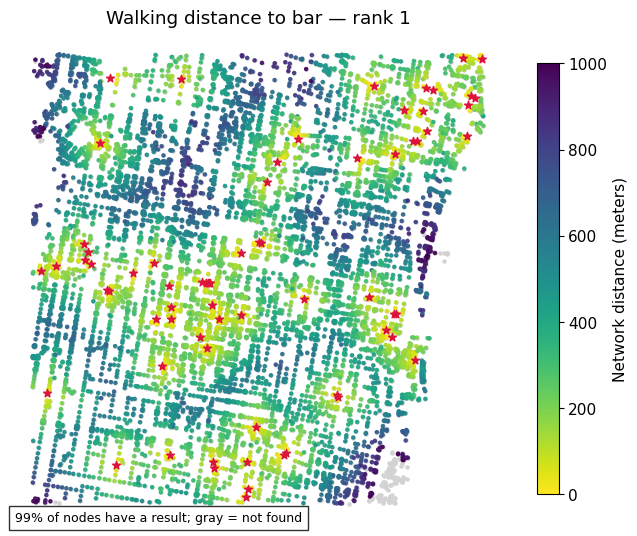
ax = plot_walking_distance(net, "bar", distance=1000, n=3)
ax.set_title("Walking distance to bar — rank 3")
plt.show()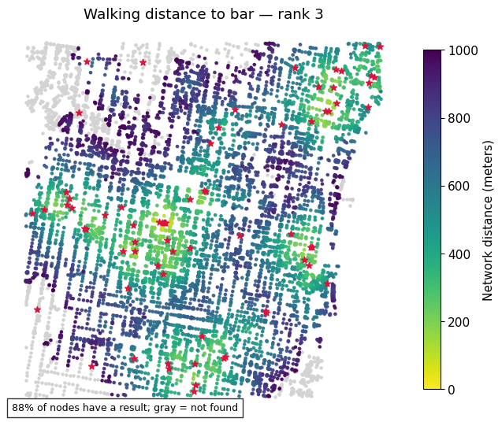
Example: schools
ax = plot_walking_distance(net, "school", distance=1000, n=1)
ax.set_title("Walking distance to school — rank 1")
plt.show()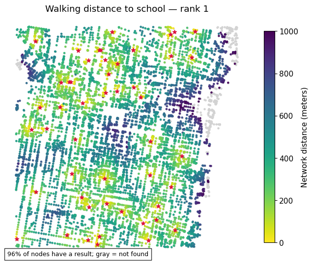
ax = plot_walking_distance(net, "school", distance=1000, n=3)
ax.set_title("Walking distance to school — rank 3")
plt.show()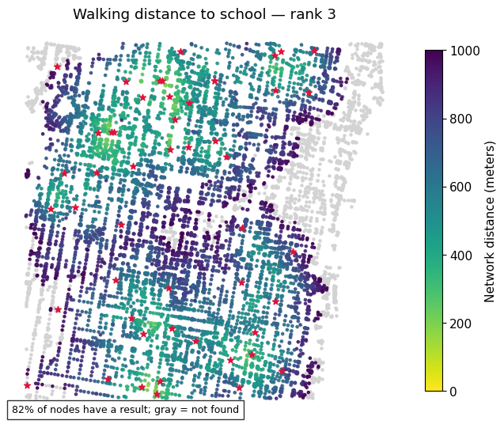
Example: restaurants
ax = plot_walking_distance(net, "restaurant", distance=1000, n=1)
ax.set_title("Walking distance to restaurant — rank 1")
plt.show()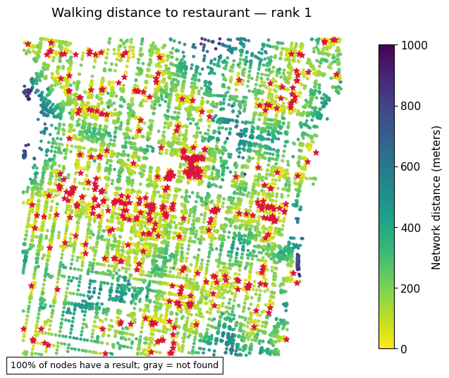
ax = plot_walking_distance(net, "restaurant", distance=1000, n=10)
ax.set_title("Walking distance to restaurant — rank 10")
plt.show()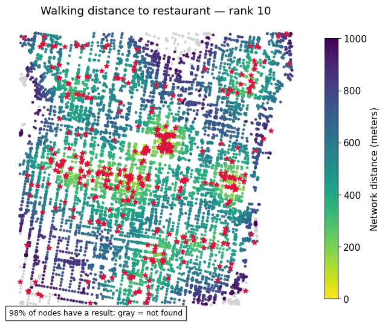
Example: car sharing
ax = plot_walking_distance(net, "car_sharing", distance=1000, n=1)
ax.set_title("Walking distance to car sharing — rank 1")
plt.show()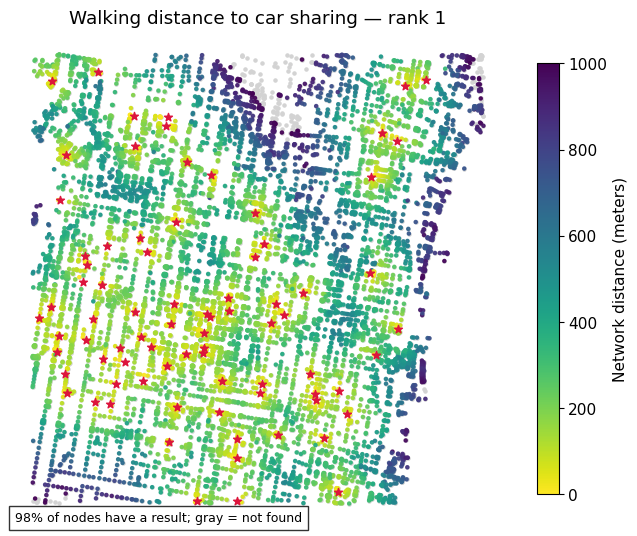
ax = plot_walking_distance(net, "car_sharing", distance=1000, n=10)
ax.set_title("Walking distance to car sharing — rank 10")
plt.show()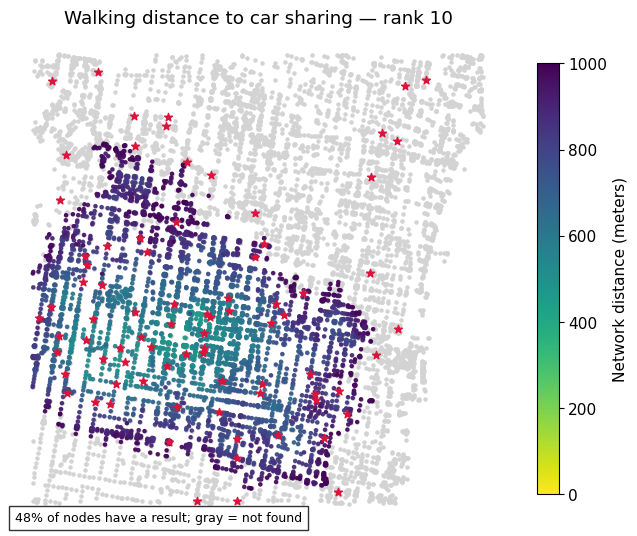
At-home exercise: Explore amenities in a neighborhood of your choice
Keep the same workflow: obtain a boundary, choose a travel network, inspect amenity tags, register POIs, and compare access to the first and a later-ranked amenity.
- Change the amenity or query distance and explain how the map changes.
- Check snapping distances and distinguish missing results from observed long distances.
- Download an area larger than your reporting neighborhood to reduce boundary effects.
- Explain limitations: OSM completeness, duplicate representations of a facility, approximate entrances, and the absence of population weights. “Tenth nearest” refers to mapped objects unless you deduplicate facilities.
Use the OSM amenity reference, OSMnx documentation, and Pandana API.
Data and maps: © OpenStreetMap contributors, ODbL. Cached results are historical snapshots, not a current inventory. Planning districts: City of Philadelphia, via Open Data Philly.